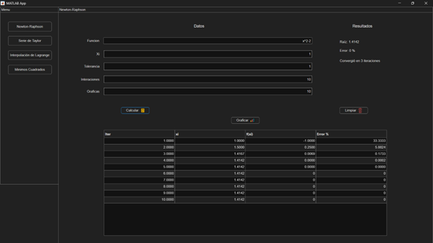
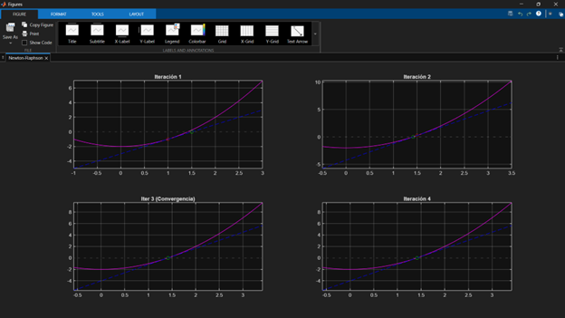
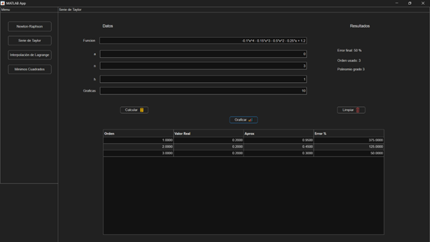
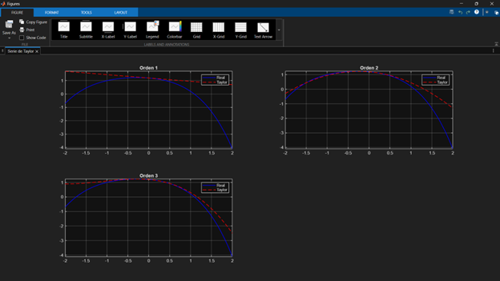
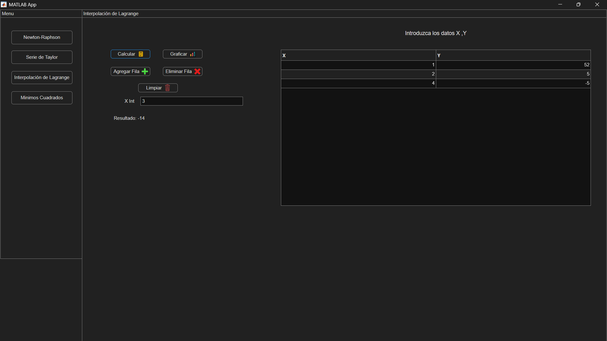
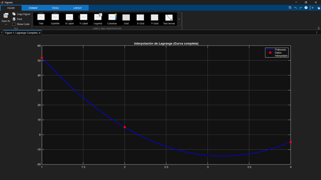
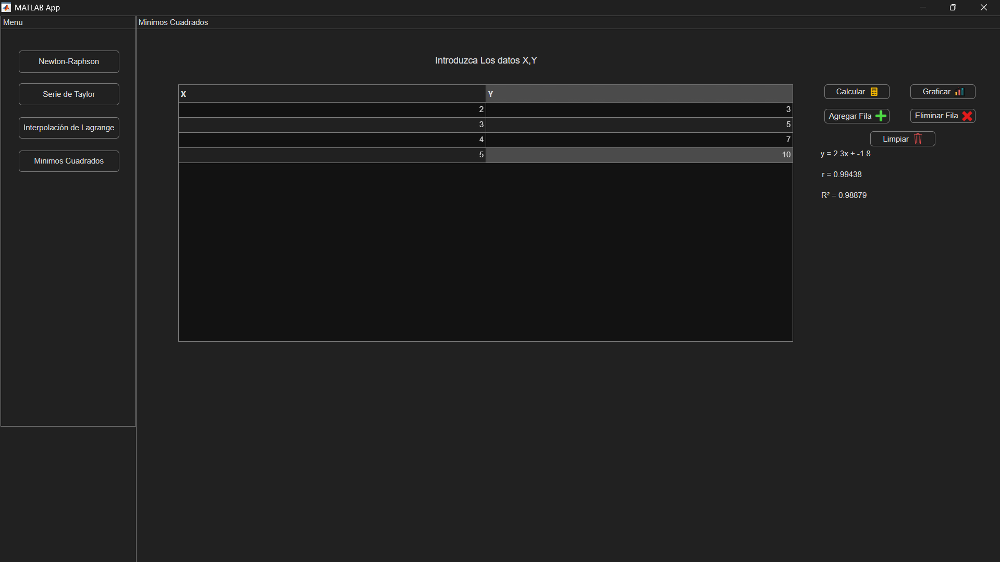
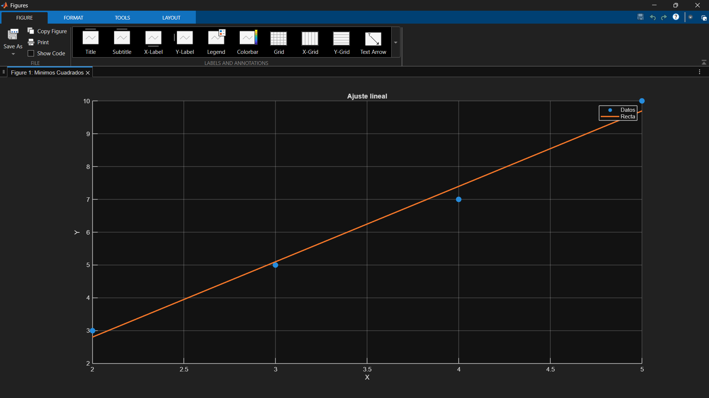

El método de Newton-Raphson es un algoritmo numérico utilizado para encontrar soluciones (Raíces) de ecuaciones no lineales. Se basa en el uso de derivadas para generar aproximaciones sucesivas cada vez mas cercanas al valor real.
Este método es útil cuando una ecuación no puede resolverse fácilmente de forma algebraica. Se utiliza en problemas de ingeniería, física y computación donde se requiere encontrar valores exactos o aproximados de manera rápida.
El método inicia con un valor aproximado inicial x_0 y mediante una formula interativa, mejora esa estimación utilizando la derivada de la función.
Formulas
Para poder resolver este método hay que utilizar estas 2 formulas.
Formula Principal
x_(n+1)=x_n-(f(x_1))/(f'(x_n))
Formula de error
E=|(x_(n+1)-x_n)/x_(n+1) |*100
Usaremos esta función para ejemplificarlo
f(x)=x^2-4
Buscamos su derivada
f^' (x)=2x
Y usamos x0 = 3
X1 = 3-(9-4)/6 = 2.1667
Y volvemos a interar con lo obtenido
X2 = 2.006
Interfaz principal con ejercicio resuelto

Ejercicio graficado

Aqui el codigo del boton calcular del programa usado de ejemplo
try
f_str = app.FuncionEditField_Newt.Value;
if isempty(f_str)
uialert(app.UIFigure,'Ingrese una función para Newton','Error');
return;
end
if app.InteracionesEditField.Value <= 0
uialert(app.UIFigure,'Las iteraciones deben ser mayores a 0','Error');
return;
end
if app.ToleranciaEditField.Value <= 0
uialert(app.UIFigure,'La tolerancia debe ser mayor a 0','Error');
return;
end
xi = app.XiEditField.Value;
es = app.ToleranciaEditField.Value;
maxIter = app.InteracionesEditField.Value;
convergio = false;
iter_convergencia = maxIter;
x = sym('x');
fs = str2sym(f_str);
dfs = diff(fs,x);
tabla = [];
xi_hist = [];
fx_hist = [];
dfx_hist = [];
for i = 1:maxIter
fxi = double(subs(fs,x,xi));
dfxi = double(subs(dfs,x,xi));
if dfxi == 0
error('La derivada es cero, no se puede continuar');
end
% Guardar datos
xi_hist = [xi_hist; xi];
fx_hist = [fx_hist; fxi];
dfx_hist = [dfx_hist; dfxi];
xi_new = xi - fxi/dfxi;
if xi_new ~= 0
ea = abs((xi_new - xi)/xi_new)*100;
else
ea = 0;
end
tabla = [tabla; i xi fxi ea];
if ~convergio && ea < es
convergio = true;
iter_convergencia = i;
end
xi = xi_new;
end
app.xi_hist = xi_hist;
app.fx_hist = fx_hist;
app.dfx_hist = dfx_hist;
app.iter_convergencia = iter_convergencia;
app.convergio = convergio;
app.UITable_Newt.Data = tabla;
app.UITable_Newt.ColumnName = {'Iter','xi','f(xi)','Error %'};
app.RaizLabel_Newt.Text = ['Raíz: ', num2str(xi_new)];
app.ErrorLabel_Newt.Text = ['Error: ', num2str(ea), ' %'];
app.IteracionesLabel_Newt.Text = ['Iteraciones: ', num2str(i)];
app.PolinomioLabel_Newt.Text = '';
if app.convergio
app.IteracionesLabel_Newt.Text = ['Convergió en ', num2str(app.iter_convergencia), ' iteraciones'];
else
app.IteracionesLabel_Newt.Text = 'No convergió';
end
catch ME
uialert(app.UIFigure, ME.message, 'Error');
end
La serie de Taylor es una herramienta matemática que permite representar funciones complejas como una suma infinita de términos basados en sus derivadas evaluadas en un punto especifico.
Se utiliza para aproximar funciones difíciles mediante polinomios, lo que facilita su cálculo y análisis en computación y matemáticas aplicadas.
La idea principal es tomar una función, expandirla en una serie de términos que incluyen: el valor de la función, sus derivadas, potencias de la variable. Mientras más términos se agreguen, mayor será la precisión.
Formulas
Este metodo tiene una formula interativa que cambia en cada paso hasta
llegar al paso 3 donde se vuelve un estandar y solo aumenta el valor de
N dependiendo del grado de la ecuacion original.
Formula general
f(x)=f(a)+f'(a)(x-a)+(f''(a))/(2!)*(x-a)^2+(f'''(a))/(n!)*(x-a)^n
Usaremos esta funcion para ejemplificarlo
f(x) = -0.1*x^4 - 0.15*x^3 - 0.5*x^2 - 0.25*x + 1.2
Datos:
Valor inicial
a = 0
Grado de la ecuacion:
n = 3
Valor para evaluar:
x = 1
Derivadas
f(x) = -0.1x^4 - 0.15x^3 - 0.5x^2 - 0.25x + 1.2
f'(x) = -0.4x^3 - 0.45x^2 + x - 0.25
f''(x) = -1.2x^2 - 0.9x + 1
f'''(x) = -2.4x - 0.9
Evaluando con el valor inicial:
f(0) = 1.2
f'(0) = -0.25
f''(0) = 1
f'''(0) = -0.9
| Valor Real | Aprox | Error |
| 0.2000 | 0.9500 | 375.0000 |
| 0.2000 | 0.4500 | 125.0000 |
| 0.2000 | 0.3000 | 50.0000 |
Resultado
Error final: 50%
Orden de la funcion: 3
Interfaz principal con ejercicio resuelto

Ejercicio graficado

Aqui el codigo del boton calcular del programa usado de ejemplo
try
f_str = app.FuncionEditField_Tay.Value;
if isempty(f_str)
uialert(app.UIFigure,'Ingrese una función para Taylor','Error');
return;
end
if app.nEditField.Value <= 0
uialert(app.UIFigure,'El orden debe ser mayor a 0','Error');
return;
end
a = app.aEditField.Value;
n = app.nEditField.Value;
h = app.hEditField.Value;
x = sym('x');
fs = str2sym(f_str);
xi = a + h;
tabla = [];
valorReal = double(subs(fs, x, xi));
for k = 1:n
% Polinomio de orden k
T = taylor(fs, x, 'ExpansionPoint', a, 'Order', k+1);
valorAprox = double(subs(T, x, xi));
if valorReal ~= 0
err = abs((valorReal - valorAprox)/valorReal)*100;
else
err = 0;
end
tabla = [tabla; k valorReal valorAprox err];
end
% Guardar en tabla
app.UITable_Tay.Data = tabla;
app.UITable_Tay.ColumnName = {'Orden','Valor Real','Aprox','Error %'};
% Mostrar resultado final (orden n)
app.RaizLabel_Tay.Text = '';
app.ErrorLabel_Tay.Text = ['Error final: ', num2str(err), ' %'];
app.IteracionesLabel_Tay.Text = ['Orden usado: ', num2str(n)];
app.PolinomioLabel_Tay.Text = ['Polinomio grado ', num2str(n)];
catch ME
uialert(app.UIFigure, ME.message, 'Error');
end
Es un método numérico que permite construir un polinomio que pasa exactamente por un conjunto de puntos conocidos. A diferencia de otros métodos, este garantiza que todos los datos sean representados.
Se utiliza para estimar valores intermedios dentro de un conjunto de datos cuando se conoce información exacta en ciertos puntos.
El método crea polinomios base para cada punto y luego los combina para formar un único polinomio que pasa por todos los puntos.
Para resolver por este metodo depende mucho del tipo de ejercicio pero la parte
mas importante es entender como se forma el polinomio.
Formulas
P(x)=∑_(i=0)^n y_i*L_i(x)
L_i(x) =∏_(j=0,j!=i)^n*((x-x_j ))/(x_i-x_j)
Para obtener las ecuaciones simplemente en el numerador se pone x- en ambos paréntesis
y en el denominador se pone la X de ese li dentro de los 2 paréntesis
(Por ejemplo, x1 en el caso de li x1) y luego se llena con los que sobran,
el primer paréntesis del numerador y denominador con el primero que sobro
(Por ejemplo, x2 en el caso de que se evalué x1) y luego los otros se llenan
con los siguientes.
Vamos a ejemplificarlo con este ejercicio
En el cual estamos buscando el valor de Y del ultimo par
(1, 52), (2,5), (4,-5), (3, ?)
Li_1(x) = ((3-2)(3-4))/((1-2)(1-4))
Li_1(x) = -1/3
Li_2(x) = ((3-1)(3-4))/((2-1)(2-4))
Li_2(x) = 1
Li_3(x) = ((3-1)(3-2))/((4-1)(4-2))
Li_3(x) = 1/3
f(x) = (-1/3 * 52) + (1 * 5) + (1/3 - 5)= -14
Respuesta
(3, -14)
Interfaz principal con ejercicio resuelto

Ejercicio graficado

Aqui el codigo del boton calcular del programa usado de ejemplo
try
data = app.UITable_Lag.Data;
x = data(:,1);
y = data(:,2);
% Quitar datos inválidos
validos = ~isnan(x) & ~isnan(y);
x = x(validos);
y = y(validos);
% Validación básica
if length(x) < 2
error('Necesitas al menos 2 puntos');
end
% Validar que no haya X repetidos
if length(unique(x)) ~= length(x)
error('No se permiten valores de X repetidos');
end
% Obtener x a interpolar
xint = str2double(app.XintEditField.Value);
if isempty(xint)
error('Ingresa un valor de X a interpolar');
end
% LAGRANGE CORRECTO
n = length(x);
yint = 0;
for i = 1:n
Li = 1;
for j = 1:n
if i ~= j
Li = Li * (xint - x(j)) / (x(i) - x(j));
end
end
yint = yint + y(i) * Li;
end
% Mostrar resultado
app.ResultadoLabel_Lag.Text = ['Resultado: ', num2str(yint)];
% Guardar para gráfica
app.xLag = x;
app.yLag = y;
app.xintLag = xint;
app.yintLag = yint;
catch ME
uialert(app.UIFigure, ME.message, 'Error');
end
El método de mínimos cuadrados es una técnica numérica que permite encontrar la mejor aproximación de una función a un conjunto de datos. Esta aproximación se obtiene minimizado el error total entre los valores reales y los valores calculados.
Se utiliza cuando los datos no siguen un patrón exacto, pero se desea encontrar una tendencia central.
Este método consiste en encontrar la recta que mejor se ajusta a un conjunto de datos minimizando el error entre los valores reales y estimados. Para ello se utiliza una función de la forma y=mx+b mediante el calculo de sumatorias se determinan los valores de m y b que generan la mejor aproximación posible.
Formulas
Para resolver este metodo se usan las siguentes formulas
a=(n*∑(x*y)-∑(x)*∑(y))/(n*∑(x^2 )-(∑(x))^2 )
b=(∑(y)-a*∑(x))/n
Y usaremos estos valores para ejemplificar
| x | Y |
| 2 | 5 |
| 4 | 7 |
| 5 | 10 |
n = 4
∑x = 14
∑y = 25
∑xy = 99
∑x^2 = 54
a = (4*99-14*25)/(4*54-(14)^2)
a = 2.3
b = (25-2.3*14)/4
b = -1.8
y por ultimo se utiliza esta formula para formar la ecuacion final
y = b + a*x
Respuesta
y = -1.8 + 2.3x
Interfaz principal con ejercicio resuelto

Ejercicio graficado

Aqui el codigo del boton calcular del programa usado de ejemplo
try
data = app.UITable_Min.Data;
X = data(:,1);
Y = data(:,2);
% Quitar vacíos
validos = ~isnan(X) & ~isnan(Y);
X = X(validos);
Y = Y(validos);
if length(X) < 2
error('Se necesitan al menos 2 puntos');
end
m = length(X);
sumX = sum(X);
sumY = sum(Y);
sumXY = sum(X .* Y);
sumX2 = sum(X.^2);
sumY2 = sum(Y.^2);
r = (m*sumXY - sumX*sumY) / sqrt((m*sumX2 - sumX^2)*(m*sumY2 - sumY^2));
R2 = r^2;
a1 = ((m * sumXY) - (sumX * sumY)) / ((m * sumX2) - (sumX^2));
a0 = ((sumY * sumX2) - (sumX * sumXY)) / ((m * sumX2) - (sumX^2));
% Guardar
app.a0 = a0;
app.a1 = a1;
app.Xdata = X;
app.Ydata = Y;
% Mostrar
app.EcuacionLabel_Min.Text = ['y = ', num2str(a1), 'x + ', num2str(a0)];
app.RLabel_Min.Text = ['r = ', num2str(r)];
app.R2Label_Min.Text = ['R² = ', num2str(R2)];
catch ME
uialert(app.UIFigure, ME.message, 'Error');
end